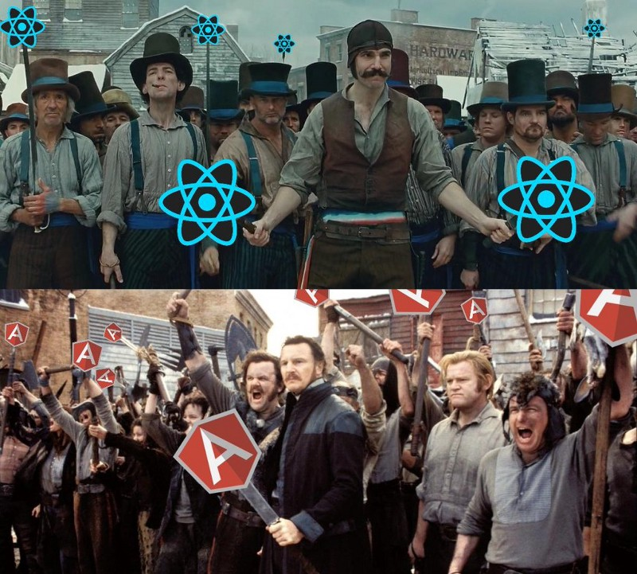
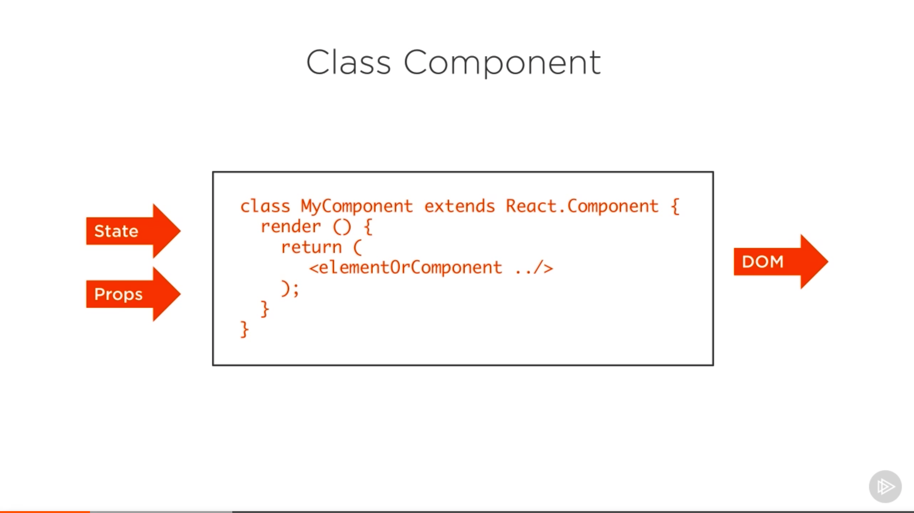
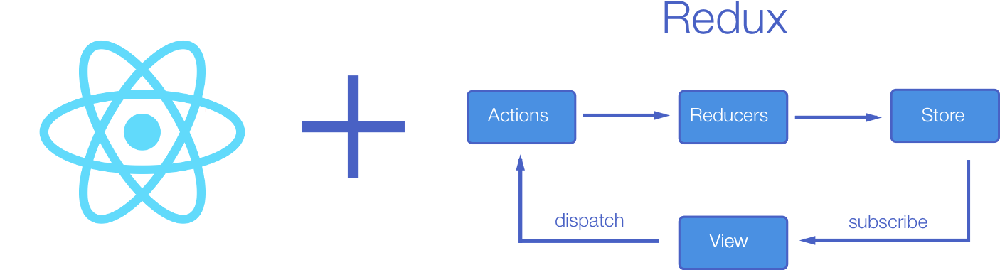

Comparison of state management solutions for React
By Pavel Leskavets 2019Q1
The component-based approach of React and other frontend frameworks like Vue and Angular has changed the way our web looks like today.

Why do we need state at all In an application, state is the interface between your data from any kind of backend or local change and the representation of this data with UI-elements in the frontend. State is able to keep the data of different components in sync because each state update will rerender all relevant components.
Component state
Redux - a predictable state container for JavaScript apps.
Redux was first released at June, 2015 by Dan Abramov
npm install --save reduxBasic example
The whole state of your app is stored in an object tree inside a single store. The only way to change the state tree is to emit an action, an object describing what happened. To specify how the actions transform the state tree, you write pure reducers.

function counter(state = 0, action) {
switch (action.type) {
case 'INCREMENT':
return state + 1
case 'DECREMENT':
return state - 1
default:
return state
}
}
Instead of mutating the state directly, you specify the mutations you want to happen with plain objects called actions. Then you write a special function called a reducer to decide how every action transforms the entire application's state.
Actions are payloads of information that send data from your application to your store. They are the only source of information for the store. You send them to the store using
store.dispatch()
const ADD_TODO = 'ADD_TODO';
{
type: ADD_TODO,
text: 'Build my first Redux app'
}
Actions are plain JavaScript objects. Actions must have a type property that indicates the type of action being performed. Types should typically be defined as string constants.
The data lifecycle in any Redux app follows these 4 steps: You call store.dispatch(action). An action is a plain object describing what happened. For example:
{ type: 'LIKE_ARTICLE', articleId: 42 }
{ type: 'FETCH_USER_SUCCESS', response: { id: 3, name: 'Mary' } }
{ type: 'ADD_TODO', text: 'Read the Redux docs.' }
You can call store.dispatch(action) from anywhere in your app, including components and XHR callbacks, or even at scheduled intervals.
The root reducer may combine the output of multiple reducers into a single state tree. How you structure the root reducer is completely up to you. Redux ships with a combineReducers() helper function, useful for “splitting” the root reducer into separate functions that each manage one branch of the state tree. Here's how combineReducers() works. Let's say you have two reducers, one for a list of todos, and another for the currently selected filter setting:
function todos(state = [], action) {
// Somehow calculate it...
return nextState
}
function visibleTodoFilter(state = 'SHOW_ALL', action) {
// Somehow calculate it...
return nextState
}
let todoApp = combineReducers({
todos,
visibleTodoFilter
})
Apollo Link State
Peggy Rayzis from Apollo implemented a library for managing local state as well to avoid the necessity for using a state management library from above when managing the state from the GraphQL Server in your app.
export const mountWithApollo = (initialState, Component) => {
const cache = new InMemoryCache();
// define the initial Store
const defaultState = { todos: [] };
const stateLink = withClientState({
cache,
defaults: initialState ? initialState : defaultState
});
const client = new ApolloClient({
cache,
link: stateLink
});
return (
);
};From this point on you are able read from your local state by writing GraphQL queries where each top level field includes the @client directive. By appending this directive Apollo knows, that you want to fetch from your local state.
const TODO_QUERY = gql`
{
todos @client {
id
title
finished
}
}`;If using Apollo with a GraphQL or REST server you can request those sources as well in one single request. When using apollo-link-rest you can wrap an ordinary REST-resource to be queried and mutated by GraphQL queries/mutations. The result of the query can be accessed with the Query-component of Apollo, that accepts a render-method like the Subscriber in Unstated or the Consumer from the Context API.